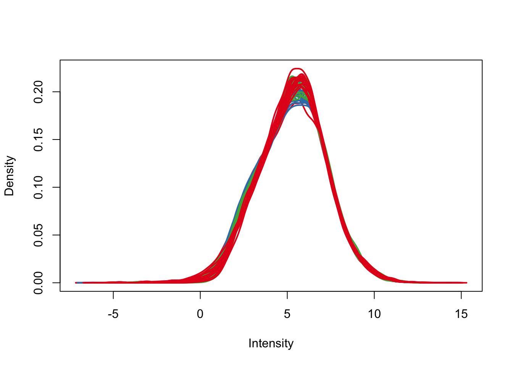
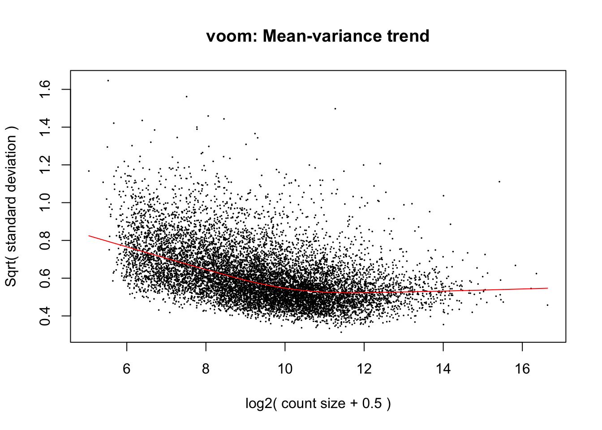
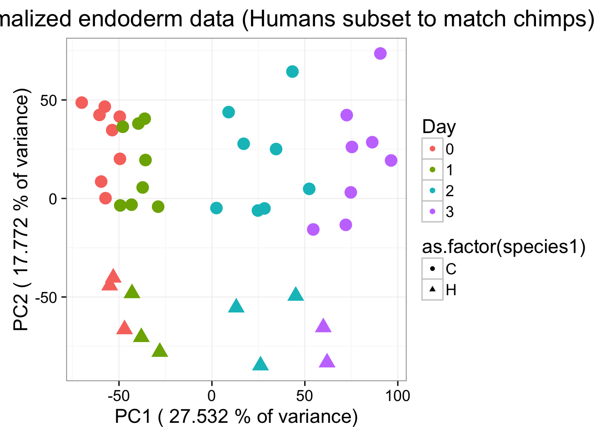
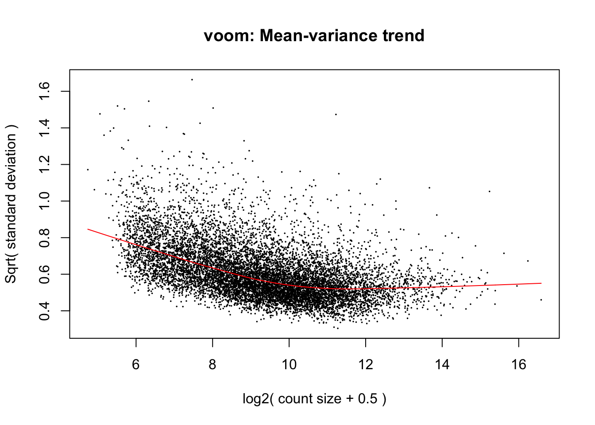
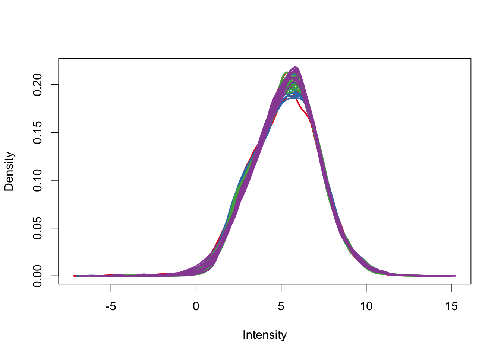
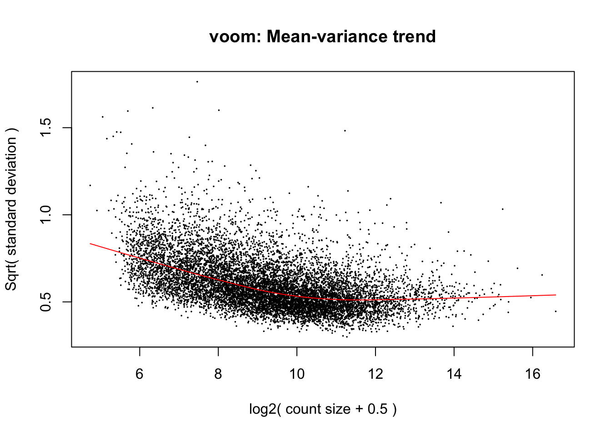
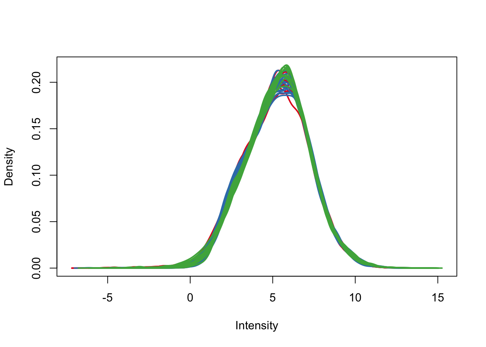

DE_exp_limma
Lauren Blake
November 8, 2016
The goal of this script to to assess differential gene expression with pairwise comparisons using Limma.
# Load libraries
library("gplots")## Warning: package 'gplots' was built under R version 3.2.4##
## Attaching package: 'gplots'## The following object is masked from 'package:stats':
##
## lowesslibrary("ggplot2")## Warning: package 'ggplot2' was built under R version 3.2.4library("RColorBrewer")
library("scales")## Warning: package 'scales' was built under R version 3.2.3library("edgeR")## Warning: package 'edgeR' was built under R version 3.2.4## Loading required package: limma## Warning: package 'limma' was built under R version 3.2.4theme_set(theme_bw(base_size = 16))
library("biomaRt")
library("colorfulVennPlot")## Loading required package: gridlibrary("VennDiagram")## Warning: package 'VennDiagram' was built under R version 3.2.5## Loading required package: futile.logger## Warning: package 'futile.logger' was built under R version 3.2.5library("gridExtra")## Warning: package 'gridExtra' was built under R version 3.2.4library("R.utils")## Warning: package 'R.utils' was built under R version 3.2.5## Loading required package: R.oo## Warning: package 'R.oo' was built under R version 3.2.5## Loading required package: R.methodsS3## Warning: package 'R.methodsS3' was built under R version 3.2.3## R.methodsS3 v1.7.1 (2016-02-15) successfully loaded. See ?R.methodsS3 for help.## R.oo v1.21.0 (2016-10-30) successfully loaded. See ?R.oo for help.##
## Attaching package: 'R.oo'## The following objects are masked from 'package:methods':
##
## getClasses, getMethods## The following objects are masked from 'package:base':
##
## attach, detach, gc, load, save## R.utils v2.4.0 (2016-09-13) successfully loaded. See ?R.utils for help.##
## Attaching package: 'R.utils'## The following object is masked from 'package:utils':
##
## timestamp## The following objects are masked from 'package:base':
##
## cat, commandArgs, getOption, inherits, isOpen, parse, warningssource("~/Desktop/Endoderm_TC/ashlar-trial/analysis/chunk-options.R")## Warning: package 'knitr' was built under R version 3.2.5# Load colors
colors <- colorRampPalette(c(brewer.pal(9, "Blues")[1],brewer.pal(9, "Blues")[9]))(100)
pal <- c(brewer.pal(9, "Set1"), brewer.pal(8, "Set2"), brewer.pal(12, "Set3"))
# Load normalized data
### Note: We want the object dge_in_cutoff for voom, which is why we import the counts data and do the normalization again. ###
gene_counts_combined_raw_data <- read.delim("~/Desktop/Endoderm_TC/gene_counts_combined.txt")
counts_genes <- gene_counts_combined_raw_data[1:30030,2:65]
rownames(counts_genes) <- gene_counts_combined_raw_data[1:30030,1]
# Get data and sample info
counts_genes63 <- counts_genes[,-2]
dim(counts_genes63)## [1] 30030 63After_removal_sample_info <- read.csv("~/Desktop/Endoderm_TC/After_removal_sample_info.csv")
Species <- After_removal_sample_info$Species
species <- After_removal_sample_info$Species
day <- After_removal_sample_info$Day
day <- as.factor(day)
individual <- After_removal_sample_info$Individual
Sample_ID <- After_removal_sample_info$Sample_ID
labels <- paste(Sample_ID, day, sep=" ")
# Log2(CPM)
cpm <- cpm(counts_genes63, log=TRUE)
# Filter lowly expressed genes
humans <- c(1:7, 16:23, 32:39, 48:55)
chimps <- c(8:15, 24:31, 40:47, 56:63)
cpm_filtered <- (rowSums(cpm[,humans] > 1.5) > 15 & rowSums(cpm[,chimps] > 1.5) > 16)
genes_in_cutoff <- cpm[cpm_filtered==TRUE,]
dim(genes_in_cutoff)## [1] 10304 63# Find the original counts of all of the genes that fit the criteria
counts_genes_in_cutoff <- counts_genes63[cpm_filtered==TRUE,]
dim(counts_genes_in_cutoff)## [1] 10304 63# Take the TMM of the counts only for the genes that remain after filtering
dge_in_cutoff <- DGEList(counts=as.matrix(counts_genes_in_cutoff), genes=rownames(counts_genes_in_cutoff), group = as.character(t(labels)))
dge_in_cutoff <- calcNormFactors(dge_in_cutoff)
cpm_in_cutoff <- cpm(dge_in_cutoff, normalized.lib.sizes=TRUE, log=TRUE)Here, we want to identify DE genes across the species.
species <- c("H", "H","H","H","H","H","H", "C", "C","C","C","C","C","C","C","H","H","H","H","H","H","H","H", "C", "C","C","C","C","C","C","C", "H","H","H","H","H","H","H","H", "C", "C","C","C","C","C","C","C", "H","H","H","H","H","H","H","H", "C", "C","C","C","C","C","C","C")
day <- c("0", "0","0","0","0","0","0", "0", "0", "0","0","0","0","0", "0", "0","1","1","1","1","1","1","1","1", "1","1","1","1","1","1","1","1", "2", "2","2","2","2","2","2","2","2", "2","2","2","2","2","2","2", "3", "3","3","3","3","3","3","3", "3", "3","3","3","3","3","3")
condition <- factor(paste(species,day,sep="."))
design <- model.matrix(~ 0 + condition)
colnames(design) <- gsub("condition", "", dput(colnames(design)))c("conditionC.0", "conditionC.1", "conditionC.2", "conditionC.3",
"conditionH.0", "conditionH.1", "conditionH.2", "conditionH.3"
)# We want a random effect term for individual. As a result, we want to run voom twice. See https://support.bioconductor.org/p/59700/
cpm.voom <- voom(dge_in_cutoff, design, normalize.method="none")
# We want a random effect term for individual
#corfit <- duplicateCorrelation(cpm.voom, design,block=individual)
corfit.correlation = 0.1947084
cpm.voom.corfit <- voom(dge_in_cutoff, design, plot = TRUE, normalize.method="none", block=individual, correlation = corfit.correlation )
# Plot the density to see shape of the distribution
plotDensities(cpm.voom.corfit, col=pal[as.numeric(day)], legend = F)
# Run lmFit and eBayes in limma
fit <- lmFit(cpm.voom.corfit , design, block=individual, correlation=corfit.correlation)
# In the contrast matrix, we have the species DE at each day
cm2 <- makeContrasts(HCday0 = c(1,0,0,0,-1,0,0,0), HCday1 = c(0,1,0,0,0,-1,0,0), HCday2 = c(0,0,1,0,0,0,-1,0), HCday3 = c(0,0,0,1,0,0,0,-1), levels = design)
# Fit the new model
diff_species <- contrasts.fit(fit, cm2)
fit2 <- eBayes(diff_species)
top3 <- list(HvCday0 =topTable(fit2, coef=1, adjust="BH", number=Inf, sort.by="none"), HvCday1 =topTable(fit2, coef=2, adjust="BH", number=Inf, sort.by="none"), HvCday2 =topTable(fit2, coef=3, adjust="BH", number=Inf, sort.by="none"), HvCday3 =topTable(fit2, coef=4, adjust="BH", number=Inf, sort.by="none"))
# Set FDR level at 5%
FDR_level <- 0.05
par(mfrow=c(1,1))
mylist <- list()
mylist[["DE Day 0"]] <- row.names(top3[[names(top3)[1]]])[top3[[names(top3)[1]]]$adj.P.Val < FDR_level]
mylist[["DE Day 1"]] <- row.names(top3[[names(top3)[2]]])[top3[[names(top3)[2]]]$adj.P.Val < FDR_level]
mylist[["DE Day 2"]] <- row.names(top3[[names(top3)[3]]])[top3[[names(top3)[3]]]$adj.P.Val < FDR_level]
mylist[["DE Day 3"]] <- row.names(top3[[names(top3)[4]]])[top3[[names(top3)[4]]]$adj.P.Val < FDR_level]
# For Bryan- make a list of genes DE between the species
# Step 1- designate which in design matrix you are interested in (genes, logFC, adj.P.value)
important_columns <- c(1,2,6)
# Find the genes that are DE at Day 0
HvCday0 =topTable(fit2, coef=1, adjust="BH", number=Inf, sort.by="none")
HvCday0_adj_pval <- HvCday0[which(HvCday0$adj.P.Val < 0.05), important_columns]
# Find the genes that are DE at Day 1
HvCday1 =topTable(fit2, coef=2, adjust="BH", number=Inf, sort.by="none")
HvCday1_adj_pval <- HvCday1[which(HvCday1$adj.P.Val < 0.05), important_columns]
# Find the genes that are DE at Day 2
HvCday2 =topTable(fit2, coef=3, adjust="BH", number=Inf, sort.by="none")
HvCday2_adj_pval <- HvCday2[which(HvCday2$adj.P.Val < 0.05), important_columns]
# Find the genes that are DE at Day 3
HvCday3 =topTable(fit2, coef=4, adjust="BH", number=Inf, sort.by="none")
HvCday3_adj_pval <- HvCday3[which(HvCday3$adj.P.Val < 0.05), important_columns]
dim(HvCday0_adj_pval)[1] 4376 3dim(HvCday1_adj_pval)[1] 4113 3dim(HvCday2_adj_pval)[1] 4422 3dim(HvCday3_adj_pval)[1] 4630 3# Make a table of the 4 sections
#write.table(HvCday0_adj_pval, "~/Desktop/Endoderm_TC/ashlar-trial/data/HvC_day0.txt", sep="\t")
#write.table(HvCday1_adj_pval, "~/Desktop/Endoderm_TC/ashlar-trial/data/HvC_day1.txt", sep="\t")
#write.table(HvCday2_adj_pval, "~/Desktop/Endoderm_TC/ashlar-trial/data/HvC_day2.txt", sep="\t")
#write.table(HvCday3_adj_pval, "~/Desktop/Endoderm_TC/ashlar-trial/data/HvC_day3.txt", sep="\t")
# End section for Bryan
# Make as pdf
Four_comp <- venn.diagram(mylist, filename= NULL, main="DE genes between species per day (FDR< 5%)", cex=1.5 , fill = pal[1:4], lty=1, height=2000, width=3000)
pdf(file = "Figure 7.D.pdf")
grid.draw(Four_comp)
dev.off()quartz_off_screen
2 # Significant between days 0 and 1 in each species
#FDR_level <- 0.05
#par(mfrow=c(1,1))
#mylist <- list()
#mylist[["H"]] <- row.names(top3[[names(top3)[6]]])[top3[[names(top3)[6]]]$adj.P.Val < FDR_level]
#mylist[["C"]] <- row.names(top3[[names(top3)[5]]])[top3[[names(top3)[5]]]$adj.P.Val < FDR_level]
#orange_blue <- c(2,5)
# Make as pdf
#Four_comp <- venn.diagram(mylist, filename= NULL, main="DE genes between days in each species (FDR< 5%)", cex=4 , fill = pal[orange_blue], lty=1, height=2000, width=3000)
#pdf(file = "Presentation_day12.pdf")
# grid.draw(Four_comp)
#dev.off()
# Significant every day
sig_all <- length(intersect(intersect(intersect(mylist[["DE Day 0"]], mylist[["DE Day 1"]]), mylist[["DE Day 2"]]), mylist[["DE Day 3"]]))
nonlist <- list()
nonlist[["non DE Day 0"]] <- row.names(top3[[names(top3)[1]]])[top3[[names(top3)[1]]]$adj.P.Val > FDR_level]
nonlist[["non DE Day 1"]] <- row.names(top3[[names(top3)[2]]])[top3[[names(top3)[2]]]$adj.P.Val > FDR_level]
nonlist[["non DE Day 2"]] <- row.names(top3[[names(top3)[3]]])[top3[[names(top3)[3]]]$adj.P.Val > FDR_level]
nonlist[["non DE Day 3"]] <- row.names(top3[[names(top3)[4]]])[top3[[names(top3)[4]]]$adj.P.Val > FDR_level]
# Non-sign all
sig_none <- length(intersect(intersect(intersect(nonlist[["non DE Day 0"]], nonlist[["non DE Day 1"]]), nonlist[["non DE Day 2"]]), nonlist[["non DE Day 3"]]))
# Find unique genes for each day
sig_day_0_only <- length(intersect(intersect(intersect(mylist[["DE Day 0"]], nonlist[["non DE Day 1"]]), nonlist[["non DE Day 2"]]), nonlist[["non DE Day 3"]]))
sig_day_1_only <- length(intersect(intersect(intersect(mylist[["DE Day 1"]], nonlist[["non DE Day 0"]]), nonlist[["non DE Day 2"]]), nonlist[["non DE Day 3"]]))
sig_day_2_only <- length(intersect(intersect(intersect(mylist[["DE Day 2"]], nonlist[["non DE Day 0"]]), nonlist[["non DE Day 1"]]), nonlist[["non DE Day 3"]]))
sig_day_3_only <- length(intersect(intersect(intersect(mylist[["DE Day 3"]], nonlist[["non DE Day 0"]]), nonlist[["non DE Day 1"]]), nonlist[["non DE Day 2"]]))
# Find the rest of the values for the graph (DE in 2 or 3 days)
black_day_0 <- length(mylist[["DE Day 0"]]) - sig_day_0_only
black_day_1 <- length(mylist[["DE Day 1"]]) - sig_day_1_only
black_day_2 <- length(mylist[["DE Day 2"]]) - sig_day_2_only
black_day_3 <- length(mylist[["DE Day 3"]]) - sig_day_3_only
#### Plot the number of genes DE between species at each day
dev.off()null device
1 # Numbers for non-unique DE genes
collect_total_barplot <- c(black_day_0, black_day_1, black_day_2, black_day_3, sig_none, sig_all)
# Numbers for unique DE genes
collect_only <- c(sig_day_0_only, sig_day_1_only, sig_day_2_only, sig_day_3_only, 0, 0)
# Combine the unique and non-unique DE genes
msig <- rbind(collect_total_barplot, collect_only)
colnames(msig) <- c("Day 0", "Day 1", "Day 2", "Day 3", "Never DE", "Always DE")
# Make a stacked barplot
barplot(msig, ylab="Number of DE genes", ylim = c(0, 6000), main = "Differentially Expressed Genes between Humans and Chimps Across Days")Find non-significant genes between species for each day
# Not significant at each day
mylist <- list()
mylist[["non DE Day 0"]] <- row.names(top3[[names(top3)[1]]])[top3[[names(top3)[1]]]$adj.P.Val > FDR_level]
mylist[["non DE Day 1"]] <- row.names(top3[[names(top3)[2]]])[top3[[names(top3)[2]]]$adj.P.Val > FDR_level]
mylist[["non DE Day 2"]] <- row.names(top3[[names(top3)[3]]])[top3[[names(top3)[3]]]$adj.P.Val > FDR_level]
mylist[["non DE Day 3"]] <- row.names(top3[[names(top3)[4]]])[top3[[names(top3)[4]]]$adj.P.Val > FDR_level]
# Not significant at any days
notsig <- length(intersect(intersect(intersect(mylist[["non DE Day 0"]], mylist[["non DE Day 1"]]), mylist[["non DE Day 2"]]), mylist[["non DE Day 3"]]))Significant interaction term
Here, the model for expression has fixed effects for day, species, and a day-by-species interaction term.
# Make the design matrix with an interaction term between species and day
condition <- factor(paste(species,day,sep="."))
design <- model.matrix(~species+day+species*day)
colnames(design) <- gsub(":", "", dput(colnames(design)))c("(Intercept)", "speciesH", "day1", "day2", "day3", "speciesH:day1",
"speciesH:day2", "speciesH:day3")#colnames(design) <- gsub(":", "", dput(colnames(design)))
# We want a random effect term for individual. As a result, we want to run voom twice. See https://support.bioconductor.org/p/59700/
cpm.voom <- voom(dge_in_cutoff, design, normalize.method="none")
# We want a random effect term for individual
corfit <- duplicateCorrelation(cpm.voom, design,block=individual)
corfit.correlation = 0.1947084
cpm.voom.corfit <- voom(dge_in_cutoff, design, plot = TRUE, normalize.method="none", block=individual, correlation = corfit.correlation )
# Plot the density to see shape of the distribution
plotDensities(cpm.voom.corfit, col=pal[as.numeric(day)], legend = F)# Run lmFit and eBayes in limma
fit <- lmFit(cpm.voom.corfit , design, block=individual, correlation=corfit.correlation)
# Fit the new model
fit2 <- eBayes(fit)
top3 <- list(day1inter =topTable(fit2, coef=6, adjust="BH", number=Inf, sort.by="none"), day2inter =topTable(fit2, coef=7, adjust="BH", number=Inf, sort.by="none"), day3inter =topTable(fit2, coef=8, adjust="BH", number=Inf, sort.by="none"))
mylist <- list()
mylist[["Human x Day 1"]] <- row.names(top3[[names(top3)[1]]])[top3[[names(top3)[1]]]$adj.P.Val < FDR_level]
mylist[["Human x Day 2"]] <- row.names(top3[[names(top3)[2]]])[top3[[names(top3)[2]]]$adj.P.Val < FDR_level]
mylist[["Human x Day 3"]] <- row.names(top3[[names(top3)[3]]])[top3[[names(top3)[3]]]$adj.P.Val < FDR_level]
# Make as pdf
Four_comp <- venn.diagram(mylist, filename= NULL, main="Genes with significant species by day interactions (FDR< 5%)", cex=1.5 , fill = pal[1:3], lty=1, height=2000, width=3000)
pdf(file = "Figure 6.A.pdf")
grid.draw(Four_comp)
dev.off()quartz_off_screen
2 Repeat the analysis but only using a subset of samples
Now, we are going to subset to only include the 20157 (Batch 2), 28815 (Batch 1), and 28126 (Batch 2) in days 0-2 and only 20157 and 28126 in day 3.
# Subset the samples
samples_to_keep <- c(1,4,5, 8:15, 17, 20, 21, 24:31, 33,36, 37,40:47, 49, 52, 56:63 )
species <- c("H", "H","H","H","H","H","H", "C", "C","C","C","C","C","C","C","H","H","H","H","H","H","H","H", "C", "C","C","C","C","C","C","C", "H","H","H","H","H","H","H","H", "C", "C","C","C","C","C","C","C", "H","H","H","H","H","H","H","H", "C", "C","C","C","C","C","C","C")
day <- c("0", "0","0","0","0","0","0", "0", "0", "0","0","0","0","0", "0", "0","1","1","1","1","1","1","1","1", "1","1","1","1","1","1","1","1", "2", "2","2","2","2","2","2","2","2", "2","2","2","2","2","2","2", "3", "3","3","3","3","3","3","3", "3", "3","3","3","3","3","3")
# Subset the species and day
species1 <- as.data.frame(species)
species1 <- species1[samples_to_keep,]
day1 <- as.data.frame(day)
day1 <- day1[samples_to_keep,]
Sample_ID_43 <- Sample_ID[samples_to_keep]
#Sample_ID_43[1] <- c("H1B")
labels <- paste(Sample_ID_43, day1, sep=" ")
# Take the TMM of the counts only for the genes that remain after filtering
counts_genes_in_cutoff_43 <- counts_genes_in_cutoff[samples_to_keep,]
dge_in_cutoff <- DGEList(counts=as.matrix(counts_genes_in_cutoff[, samples_to_keep]), genes=rownames(counts_genes_in_cutoff[, samples_to_keep]), group = as.character(t(labels)))
dge_in_cutoff <- calcNormFactors(dge_in_cutoff)
cpm_in_cutoff <- cpm(dge_in_cutoff, normalized.lib.sizes=TRUE, log=TRUE)
head(cpm_in_cutoff) D0_20157 D0_28162 D0_28815 D0_3647 D0_36470116 D0_3649
ENSG00000000003 7.666887 7.552523 7.667892 7.999150 7.964802 7.759551
ENSG00000000419 6.602240 6.694251 6.397524 5.750014 6.659866 5.545887
ENSG00000000457 3.505002 3.767750 3.757056 4.514018 4.839825 4.860630
ENSG00000000460 5.586966 5.335995 5.508917 5.727276 5.630599 5.454519
ENSG00000001036 6.565851 6.478730 6.658377 6.662235 6.508938 6.438993
ENSG00000001084 6.785202 6.884728 6.823589 6.924570 6.866096 6.443599
D0_3649_0116 D0_40300 D0_40300_0116 D0_4955 D0_4955_0116
ENSG00000000003 7.662517 7.749555 7.266127 8.069458 7.440003
ENSG00000000419 6.139484 5.518641 5.638588 5.920671 5.579494
ENSG00000000457 4.543224 4.786110 4.715185 5.050432 4.701635
ENSG00000000460 5.193904 5.409706 5.746273 5.501778 5.692062
ENSG00000001036 6.462931 6.516642 5.843244 6.657266 5.958483
ENSG00000001084 6.131580 6.629634 6.604443 6.587136 6.551615
D1_20157_0116 D1_28162 D1_28815 D1_3647 D1_3647_0116
ENSG00000000003 7.574895 7.541381 7.693971 7.447703 7.314916
ENSG00000000419 6.873788 6.700503 7.006780 5.790362 6.175832
ENSG00000000457 3.515437 3.428026 3.931575 4.703579 4.742074
ENSG00000000460 5.649504 5.535184 5.730176 5.465811 5.457987
ENSG00000001036 6.267133 5.604307 6.043472 5.888861 6.148031
ENSG00000001084 6.938436 6.851612 7.022147 6.739406 6.447268
D1_3649 D1_3649_0116 D1_40300 D1_40300_0116 D1_4955
ENSG00000000003 7.727045 7.765187 7.882489 7.209700 7.858718
ENSG00000000419 5.975113 6.322324 5.999738 5.624330 6.290980
ENSG00000000457 5.043823 4.837075 4.811592 4.638943 5.035682
ENSG00000000460 5.661325 5.424358 5.626171 5.695962 5.489585
ENSG00000001036 6.421169 6.319581 6.146620 5.762352 6.420594
ENSG00000001084 6.394555 6.143154 6.572766 6.542276 6.604201
D1_4955_0116 D2_20157_0116 D2_28162 D2_28815 D2_3647
ENSG00000000003 7.531477 7.117897 6.889788 5.976559 7.239082
ENSG00000000419 6.258963 6.888781 6.457160 6.954237 5.660610
ENSG00000000457 4.702041 3.629095 3.723929 5.129176 4.686855
ENSG00000000460 5.765495 4.976032 4.923510 5.535972 5.198996
ENSG00000001036 6.004825 6.924118 6.045860 5.871393 5.871721
ENSG00000001084 6.548956 7.265390 7.222978 7.513238 7.240329
D2_3647_0116 D2_3649 D2_3649_0116 D2_40300 D2_40300_0116
ENSG00000000003 6.870626 7.682226 7.580646 7.390547 6.938549
ENSG00000000419 5.584074 5.939125 5.989422 5.821400 5.582401
ENSG00000000457 4.787525 5.085492 5.178652 5.022906 4.945512
ENSG00000000460 4.887299 5.226162 4.838616 5.051309 5.037235
ENSG00000001036 5.854454 6.144550 5.888692 6.026504 5.579631
ENSG00000001084 6.810469 6.660173 6.694783 6.610930 6.995792
D2_4955 D2_4955_0116 D3_20157_0116 D3_28162 D3_3647
ENSG00000000003 7.728951 7.126346 7.029282 6.782377 6.889327
ENSG00000000419 6.250441 5.920930 6.216045 6.375280 5.426692
ENSG00000000457 5.188839 5.054545 3.753318 3.728482 4.872069
ENSG00000000460 5.087000 5.373107 4.439093 4.253110 4.534587
ENSG00000001036 6.202545 5.691593 6.836537 5.982231 5.734257
ENSG00000001084 6.480148 6.965154 6.733239 7.186535 7.255290
D3_3647_0116 D3_3649 D3_3649_0116 D3_40300 D3_40300_0116
ENSG00000000003 6.971864 7.196961 7.597596 6.945987 7.110069
ENSG00000000419 5.440665 5.511795 5.608552 5.457278 5.694422
ENSG00000000457 4.768674 5.224928 4.936371 5.289149 4.934258
ENSG00000000460 3.825519 3.970743 3.330032 4.429630 4.756462
ENSG00000001036 5.923268 5.682365 5.812589 5.877066 5.425665
ENSG00000001084 6.928603 6.697804 6.796982 6.627567 6.747722
D3_4955 D3_4955_0116
ENSG00000000003 6.967484 7.099858
ENSG00000000419 5.714709 5.634974
ENSG00000000457 5.358955 5.120214
ENSG00000000460 3.979420 4.495437
ENSG00000001036 5.767835 5.689313
ENSG00000001084 6.822175 7.126062dim(cpm_in_cutoff)[1] 10304 43Data visualization
# Make PCA plots with the factors colored by day
pca_genes <- prcomp(t(cpm_in_cutoff), scale = T, retx = TRUE, center = TRUE)
scores <- pca_genes$x
matrixpca <- pca_genes$x
pc1 <- matrixpca[,1]
pc2 <- matrixpca[,2]
pc3 <- matrixpca[,3]
pc4 <- matrixpca[,4]
pc5 <- matrixpca[,5]
pcs <- data.frame(pc1, pc2, pc3, pc4, pc5)
summary <- summary(pca_genes)
ggplot(data=pcs, aes(x=pc1, y=pc2, color=as.factor(day1), shape=as.factor(species1), size=2)) + geom_point() + xlab(paste("PC1 (",(summary$importance[2,1]*100), "% of variance)")) + ylab(paste("PC2 (",(summary$importance[2,2]*100), "% of variance)")) + guides(color = guide_legend(order=1), size = FALSE, shape = guide_legend(order=2)) + scale_color_discrete(name ="Day") + labs(title = "PCA of normalized endoderm data (Humans subset to match chimps)")
# Make the design matrix
condition <- factor(paste(species1,day1,sep="."))
design <- model.matrix(~ 0 + condition)
colnames(design) <- gsub("condition", "", dput(colnames(design)))c("conditionC.0", "conditionC.1", "conditionC.2", "conditionC.3",
"conditionH.0", "conditionH.1", "conditionH.2", "conditionH.3"
)# We want a random effect term for individual. As a result, we want to run voom twice. See https://support.bioconductor.org/p/59700/
cpm.voom <- voom(dge_in_cutoff, design, normalize.method="none")
# We want a random effect term for individual
#corfit <- duplicateCorrelation(cpm.voom, design,block=Sample_ID_43)
corfit.correlation = 0.349764
cpm.voom.corfit <- voom(dge_in_cutoff, design, plot = TRUE, normalize.method="none", block=Sample_ID_43, correlation = corfit.correlation )
# Plot the density to see shape of the distribution
plotDensities(cpm.voom.corfit, col=pal[as.numeric(day1)], legend = F)
# Run lmFit and eBayes in limma
fit <- lmFit(cpm.voom.corfit , design, block=Sample_ID_43, correlation=corfit.correlation)
# In the contrast matrix, we have the species DE at each day
cm2 <- makeContrasts(HCday0 = c(1,0,0,0,-1,0,0,0), HCday1 = c(0,1,0,0,0,-1,0,0), HCday2 = c(0,0,1,0,0,0,-1,0), HCday3 = c(0,0,0,1,0,0,0,-1), levels = design)
# Fit the new model
diff_species <- contrasts.fit(fit, cm2)
fit2 <- eBayes(diff_species)
top3 <- list(HvCday0 =topTable(fit2, coef=1, adjust="BH", number=Inf, sort.by="none"), HvCday1 =topTable(fit2, coef=2, adjust="BH", number=Inf, sort.by="none"), HvCday2 =topTable(fit2, coef=3, adjust="BH", number=Inf, sort.by="none"), HvCday3 =topTable(fit2, coef=4, adjust="BH", number=Inf, sort.by="none"))
# Set FDR level at 5%
FDR_level <- 0.05
par(mfrow=c(1,1))
mylist <- list()
mylist[["DE Day 0"]] <- row.names(top3[[names(top3)[1]]])[top3[[names(top3)[1]]]$adj.P.Val < FDR_level]
mylist[["DE Day 1"]] <- row.names(top3[[names(top3)[2]]])[top3[[names(top3)[2]]]$adj.P.Val < FDR_level]
mylist[["DE Day 2"]] <- row.names(top3[[names(top3)[3]]])[top3[[names(top3)[3]]]$adj.P.Val < FDR_level]
mylist[["DE Day 3"]] <- row.names(top3[[names(top3)[4]]])[top3[[names(top3)[4]]]$adj.P.Val < FDR_level]
# For Bryan- make a list of genes DE between the species
# Step 1- designate which in design matrix you are interested in (genes, logFC, adj.P.value)
important_columns <- c(1,2,6)
# Find the genes that are DE at Day 0
HvCday0 =topTable(fit2, coef=1, adjust="BH", number=Inf, sort.by="none")
HvCday0_adj_pval <- HvCday0[which(HvCday0$adj.P.Val < 0.05), important_columns]
# Find the genes that are DE at Day 1
HvCday1 =topTable(fit2, coef=2, adjust="BH", number=Inf, sort.by="none")
HvCday1_adj_pval <- HvCday1[which(HvCday1$adj.P.Val < 0.05), important_columns]
# Find the genes that are DE at Day 2
HvCday2 =topTable(fit2, coef=3, adjust="BH", number=Inf, sort.by="none")
HvCday2_adj_pval <- HvCday2[which(HvCday2$adj.P.Val < 0.05), important_columns]
# Find the genes that are DE at Day 3
HvCday3 =topTable(fit2, coef=4, adjust="BH", number=Inf, sort.by="none")
HvCday3_adj_pval <- HvCday3[which(HvCday3$adj.P.Val < 0.05), important_columns]
dim(HvCday0_adj_pval)[1] 3393 3dim(HvCday1_adj_pval)[1] 3138 3dim(HvCday2_adj_pval)[1] 3690 3dim(HvCday3_adj_pval)[1] 3062 3# Make a table of the 4 sections
#write.table(HvCday0_adj_pval, "~/Desktop/Endoderm_TC/ashlar-trial/data/HvC_day0.txt", sep="\t")
#write.table(HvCday1_adj_pval, "~/Desktop/Endoderm_TC/ashlar-trial/data/HvC_day1.txt", sep="\t")
#write.table(HvCday2_adj_pval, "~/Desktop/Endoderm_TC/ashlar-trial/data/HvC_day2.txt", sep="\t")
#write.table(HvCday3_adj_pval, "~/Desktop/Endoderm_TC/ashlar-trial/data/HvC_day3.txt", sep="\t")
# End section for Bryan
# Make as pdf
#Four_comp <- venn.diagram(mylist, filename= NULL, main="DE genes between species per day (FDR< 5%)", cex=1.5 , fill = pal[1:4], lty=1, height=2000, width=3000)
#pdf(file = "Figure 7.D.pdf")
# grid.draw(Four_comp)
#dev.off()
# Significant between days 0 and 1 in each species
#FDR_level <- 0.05
#par(mfrow=c(1,1))
#mylist <- list()
#mylist[["H"]] <- row.names(top3[[names(top3)[6]]])[top3[[names(top3)[6]]]$adj.P.Val < FDR_level]
#mylist[["C"]] <- row.names(top3[[names(top3)[5]]])[top3[[names(top3)[5]]]$adj.P.Val < FDR_level]
#orange_blue <- c(2,5)
# Make as pdf
#Four_comp <- venn.diagram(mylist, filename= NULL, main="DE genes between days in each species (FDR< 5%)", cex=4 , fill = pal[orange_blue], lty=1, height=2000, width=3000)
#pdf(file = "Presentation_day12.pdf")
# grid.draw(Four_comp)
#dev.off()
# Significant every day
sig_all <- length(intersect(intersect(intersect(mylist[["DE Day 0"]], mylist[["DE Day 1"]]), mylist[["DE Day 2"]]), mylist[["DE Day 3"]]))
nonlist <- list()
nonlist[["non DE Day 0"]] <- row.names(top3[[names(top3)[1]]])[top3[[names(top3)[1]]]$adj.P.Val > FDR_level]
nonlist[["non DE Day 1"]] <- row.names(top3[[names(top3)[2]]])[top3[[names(top3)[2]]]$adj.P.Val > FDR_level]
nonlist[["non DE Day 2"]] <- row.names(top3[[names(top3)[3]]])[top3[[names(top3)[3]]]$adj.P.Val > FDR_level]
nonlist[["non DE Day 3"]] <- row.names(top3[[names(top3)[4]]])[top3[[names(top3)[4]]]$adj.P.Val > FDR_level]
# Non-sign all
sig_none <- length(intersect(intersect(intersect(nonlist[["non DE Day 0"]], nonlist[["non DE Day 1"]]), nonlist[["non DE Day 2"]]), nonlist[["non DE Day 3"]]))
# Find unique genes for each day
sig_day_0_only <- length(intersect(intersect(intersect(mylist[["DE Day 0"]], nonlist[["non DE Day 1"]]), nonlist[["non DE Day 2"]]), nonlist[["non DE Day 3"]]))
sig_day_1_only <- length(intersect(intersect(intersect(mylist[["DE Day 1"]], nonlist[["non DE Day 0"]]), nonlist[["non DE Day 2"]]), nonlist[["non DE Day 3"]]))
sig_day_2_only <- length(intersect(intersect(intersect(mylist[["DE Day 2"]], nonlist[["non DE Day 0"]]), nonlist[["non DE Day 1"]]), nonlist[["non DE Day 3"]]))
sig_day_3_only <- length(intersect(intersect(intersect(mylist[["DE Day 3"]], nonlist[["non DE Day 0"]]), nonlist[["non DE Day 1"]]), nonlist[["non DE Day 2"]]))
sig_day_0_only[1] 563sig_day_1_only[1] 265sig_day_2_only[1] 805sig_day_3_only[1] 587# Find the rest of the values for the graph (DE in 2 or 3 days)
black_day_0 <- length(mylist[["DE Day 0"]]) - sig_day_0_only
black_day_1 <- length(mylist[["DE Day 1"]]) - sig_day_1_only
black_day_2 <- length(mylist[["DE Day 2"]]) - sig_day_2_only
black_day_3 <- length(mylist[["DE Day 3"]]) - sig_day_3_only
#### Plot the number of genes DE between species at each day
dev.off()null device
1 # Numbers for non-unique DE genes
collect_total_barplot <- c(black_day_0, black_day_1, black_day_2, black_day_3, sig_none, sig_all)
# Numbers for unique DE genes
collect_only <- c(sig_day_0_only, sig_day_1_only, sig_day_2_only, sig_day_3_only, 0, 0)
# Combine the unique and non-unique DE genes
msig <- rbind(collect_total_barplot, collect_only)
colnames(msig) <- c("Day 0", "Day 1", "Day 2", "Day 3", "Never DE", "Always DE")
# Make a stacked barplot
barplot(msig, ylab="Number of DE genes", ylim = c(0, 6000), main = "DE Genes between 2-3 Humans and Chimps Across Days")Subset of human samples with the interaction term
# Make the design matrix with an interaction term between species and day
condition <- factor(paste(species1,day1,sep="."))
design <- model.matrix(~species1+day1+species1*day1)
colnames(design) <- gsub(":", "", dput(colnames(design)))c("(Intercept)", "species1H", "day11", "day12", "day13", "species1H:day11",
"species1H:day12", "species1H:day13")#colnames(design) <- gsub(":", "", dput(colnames(design)))
# We want a random effect term for individual. As a result, we want to run voom twice. See https://support.bioconductor.org/p/59700/
cpm.voom <- voom(dge_in_cutoff, design, normalize.method="none")
# We want a random effect term for individual
#corfit <- duplicateCorrelation(cpm.voom, design,block=Sample_ID_43)
corfit.correlation = 0.1947084
cpm.voom.corfit <- voom(dge_in_cutoff, design, plot = TRUE, normalize.method="none", block=Sample_ID_43, correlation = corfit.correlation )
# Plot the density to see shape of the distribution
plotDensities(cpm.voom.corfit, col=pal[as.numeric(day)], legend = F)
# Run lmFit and eBayes in limma
fit <- lmFit(cpm.voom.corfit , design, block=Sample_ID_43, correlation=corfit.correlation)
# Fit the new model
fit2 <- eBayes(fit)
top3 <- list(day1inter =topTable(fit2, coef=6, adjust="BH", number=Inf, sort.by="none"), day2inter =topTable(fit2, coef=7, adjust="BH", number=Inf, sort.by="none"), day3inter =topTable(fit2, coef=8, adjust="BH", number=Inf, sort.by="none"))
# Find the name of the genes with a significant interaction term
mylist <- list()
mylist[["Human x Day 1"]] <- row.names(top3[[names(top3)[1]]])[top3[[names(top3)[1]]]$adj.P.Val < FDR_level]
mylist[["Human x Day 2"]] <- row.names(top3[[names(top3)[2]]])[top3[[names(top3)[2]]]$adj.P.Val < FDR_level]
mylist[["Human x Day 3"]] <- row.names(top3[[names(top3)[3]]])[top3[[names(top3)[3]]]$adj.P.Val < FDR_level]
# Find the numbers of genes with a significant interaction term
sig_subset_interaction_day1 <- length(row.names(top3[[names(top3)[1]]])[top3[[names(top3)[1]]]$adj.P.Val < FDR_level])
sig_subset_interaction_day2 <- length(row.names(top3[[names(top3)[2]]])[top3[[names(top3)[2]]]$adj.P.Val < FDR_level])
sig_subset_interaction_day3 <- length(row.names(top3[[names(top3)[3]]])[top3[[names(top3)[3]]]$adj.P.Val < FDR_level])
sig_subset_interaction_day1[1] 42sig_subset_interaction_day2[1] 717sig_subset_interaction_day3[1] 828